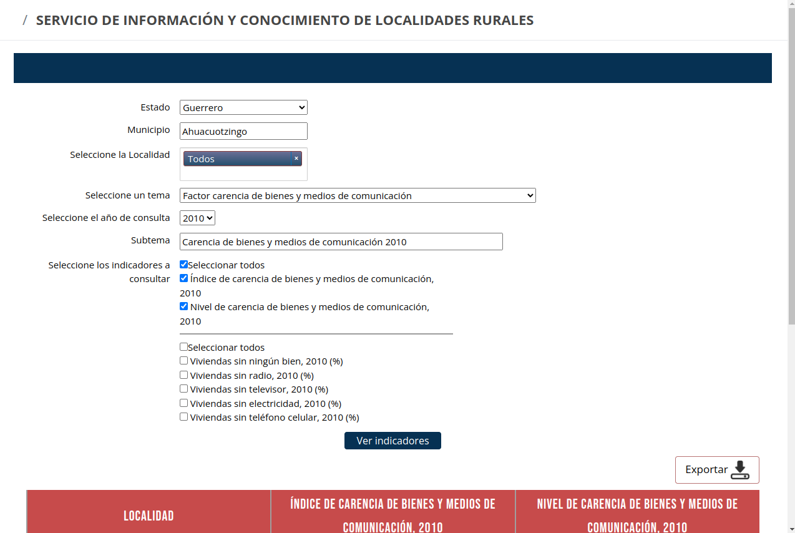
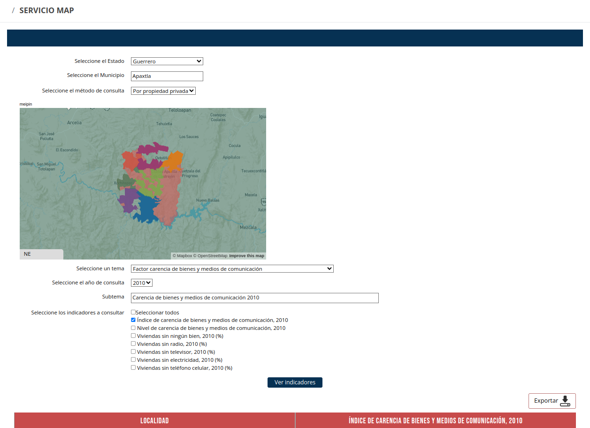

Alcances
¡Te damos la bienvenida al Servicio de información y conocimiento de localidades rurales y su entorno territorial!
En este espacio, podrás consultar y descargar la información sobre las características determinantes de la vulnerabilidad de las localidades rurales, es decir, aquellas que tienen una población igual o menor a 2500 habitantes, y que se encuentran dentro de la Región Pacífico Sur de México, en los Estados de Guerrero, Oaxaca y Chiapas.
Aquí podrás acceder a la información en la zona de tu interés y conocer el entorno territorial de las localidades, a partir de una variedad de temas que describen su vulnerabilidad y características.
El primer eje está orientado a describir el grado de vulnerabilidad poblacional, y agrupa ocho temáticas que son:
Cada una de estas ocho temáticas agrupa a su vez una serie de indicadores y variables derivados de datos cuantitativos y cualitativos de los censos de población y vivienda de 2010 y 2020, mismos que podrás consultar, y realizar comparativos para identificar las tendencias de cambio.
El segundo eje temático está orientado a describir las características que determinan la vulnerabilidad y la capacidad de adaptación de cada localidad. Está basado en la información cualitativa proporcionada por un informante clave perteneciente a cada una de las localidades, a partir de cuestionarios realizados en todas las localidades rurales durante el año 2020.
Al consultar los aspectos cualitativos de vulnerabilidad, podrás identificar las condiciones específicas de las localidades en diferentes ámbitos, por ejemplo:
¿Cómo puedo acceder a la información?
Podrás acceder a todos los temas y sus indicadores a partir de diferentes aproximaciones territoriales:
Al finalizar cada consulta, podrás realizar la descarga de los resultados y los productos de información, como mapas, infografías y tablas de datos.
¡Te invitamos a explorar el territorio a través de este servicio público de la Región Pacífico Sur, que te permitirá acceder a la información de forma ágil, sencilla y con un enfoque territorial!
Búsqueda por localidades
>Búsqueda por territorio o tenencia de la tierra
> >
>